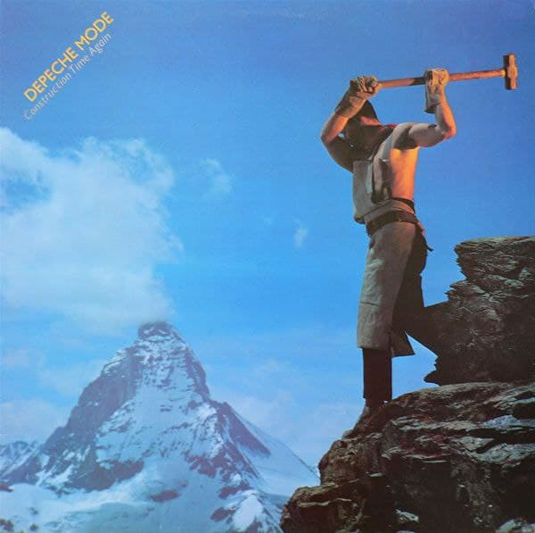

Speak & Spell fue el álbum debut del grupo
producido y publicado en 1981.
Fue producido por el grupo y Daniel Miller. La mayoría de
los temas fueron escritos por Vince Clarke, excepto Tora! Tora!
Tora! y Big Muff, que fueron escritos por Martin Gore.
Con motivo del disco, Depeche Mode realizó la gira 1981 Tour,
última vez que Vince Clarke participó con ellos.
A Broken Frame es el segundo álbum del grupo,
producido y publicado en 1982.
Fue producido por el grupo y Daniel Miller.
Todos los temas fueron escritos por Martin Gore.
Con motivo del disco, Depeche Mode realizó durante
1982-83 la gira Broken Frame Tour, con Alan Wilder como músico de apoyo.

Construction Time Again , producido y publicado en 1983.
Fue producido por el grupo y Daniel Miller.
La mayoría de los temas fueron escritos por Martin Gore,
excepto Two Minute Warning y The Landscape is Changing que fueron
escritos por Alan Wilder.
Es el único álbum conceptual de Depeche Mode, el concepto de que trata es el socialismo.
Con motivo del disco, Depeche Mode realizó durante 1983-84
la gira Construction Tour.
El título Construction Time Again fue tomado
de la letra de la canción Pipeline.
Some Great Reward, producido y publicado en 1984.
Fue producido por el grupo, Daniel Miller y el ingeniero
Gareth Jones. Todos los temas fueron escritos
por Martin Gore, excepto If You Want, que
fue escrito por Alan Wilder.
Con motivo del disco, Depeche Mode realizó durante
1984-85 la gira Some Great Tour. Posteriormente,
en 1985 se publicó The World We Live In and Live
in Hamburg, el primer material en directo de la banda.
El título Some Great Reward fue tomado de la letra
de la canción Lie to Me.
The Singles 81→85 es una compilación de sencillos
del grupo, publicada originalmente en 1985 sólo en Europa.
En América, se lanzó ese mismo año la contraparte
Catching Up With Depeche Mode.
Como su nombre indica, contiene los sencillos
del grupo de 1981 a 1984, correspondientes a sus
cuatro primeros álbumes, así como dos canciones de ese año;
aunque como en otros discos de aquella época de Depeche Mode
la edición en LP difirió de la de CD.
Catching Up with Depeche Mode es una compilación
de sencillos del grupo
publicada en 1985, destinada exclusivamente al
continente americano.
Apareció como contraparte a la compilación
The Singles 81-85 que se publicó solo en Europa,
incluso con el mismo arte de portada, pero la
selección de canciones que contienen es un tanto
distinta y ésta estuvo destinada exclusivamente a América.
Black Celebration, producido durante 1985-86 y publicado en 1986.
Fue producido por el grupo, Daniel Miller y el ingeniero
Gareth Jones. Todos los temas fueron escritos por Martin Gore.
Con motivo del disco, Depeche Mode realizó durante 1986
la gira Black Celebration Tour.
Junto al EP People Are People (1984), son los únicos que
toman su nombre de una de sus canciones.
Music for the Masses, producido y
publicado en 1987.
Fue producido por el grupo, el ingeniero David Bascombe
y adicionalmente por Daniel Miller. Todos los temas fueron
escritos por Martin Gore.
Con motivo del disco, Depeche Mode realizó durante 1987-88
la gira Tour for the Masses. Posteriormente, en 1989 se
publicaron el documental y el álbum 101, el primer directo de la banda.
101 es un álbum en directo del grupo, grabado
en 1988 y publicado en 1989.
Fue el primer álbum en vivo del grupo y también
su primer álbum doble. Contiene un concierto
ofrecido el 18 de junio de 1988 en el estadio
Rose Bowl de Pasadena, California, correspondiente
a la gira Tour for the Masses con motivo de su
álbum Music for the Masses de 1987.
La presentación fue la última y la número 101
de la gira, por eso el álbum recibió ese título,
aunque coincidentemente una carretera cercana de
esa área tiene también ese nombre.
Violator es el
séptimo álbum de estudio
de la banda, producido durante 1989-90 y
publicado en marzo de 1990 por Mute
en el Reino Unido, y Sire Records en los
Estados Unidos.
Fue producido por el grupo y Mark Ellis «Flood».
Todos los temas fueron escritos por Martin Gore.
Con motivo del disco, Depeche Mode
realizó durante 1990 la gira World Violation Tour.
Songs of Faith and Devotion es el octavo álbum del grupo,
Fue producido por el grupo y Mark Ellis Flood.
Todos los temas fueron escritos por Martin Gore.
Con motivo del disco, Depeche Mode realizó durante
1993 la gira Devotional Tour; para 1994 tuvo una
extensión con el nombre de Exotic Tour, en la cual
Daryl Bamonte suplió a Andrew Fletcher en el grupo.
Desde 1993, se publicó Devotional, vídeo en directo de la banda.
Ultra es el noveno álbum del grupo, producido
durante 1996-97
y publicado en 1997.
Fue producido por Tim Simenon. Todos los temas
fueron escritos por Martin Gore.
Con motivo del disco, Depeche Mode realizó solo
dos conciertos, en Londres y en Los Ángeles, ante
prensa e invitados, con el nombre de Ultra Parties,
con el baterista Christian Eigner y el teclista Dave
Clayton como músicos de apoyo.
The Singles 86>98 es una compilación en dos discos de sencillos
del grupo, publicada en 1998.
Como su nombre indica contiene todos los sencillos del
grupo desde 1986 hasta 1997, además de una canción de ese año.
Su creación obedeció a que desde 1985 no existía un compilado
de canciones de Depeche Mode, aunque llama la atención que sea
una colección de sencillos, no de éxitos. En complemento se
republicó en ese año la recopilación The Singles 81>85.
Con motivo del material, Depeche Mode realizó la breve gira
The Singles Tour durante 1998, acompañados del baterista
Christian Eigner y el teclista Peter Gordeno como músicos
de apoyo. Es la única ocasión en que el grupo ha realizado
una gira con un disco recopilatorio.
Exciter, producido durante 2000-01 y publicado en 2001.
Fue producido por Mark Bell. Todos los temas
fueron escritos por Martin Gore.
Con motivo del disco, Depeche Mode
realizó durante 2001 la gira Exciter Tour,
acompañados del baterista Christian Eigner
y el teclista Peter Gordeno como músicos de
apoyo. Posteriormente, en 2002 se publicó el
álbum en directo, One Night in Paris.
Exciter debutó en el puesto 9 en las listas
británicas y en el puesto 8 del Billboard 200
con ventas de 115,000 copias en su primera
semana de lanzamiento.7 Es el único álbum de
Depeche Mode con debut más alto en los Estados
Unidos que en el Reino Unido. Desde 2009 ha vendido
más de 600,000 copias en los Estados Unidos, donde se
certificó como disco de oro.
Remixes 81··04 es la primera compilación de
mezclas del grupo, publicada en 2004.
Fue el primer material de la banda editado
por Mute Records como propiedad de la multinacional
EMI, como su nombre indica contiene diversas mezclas
de temas de Depeche Mode desde el inicio de su trayectoria
en 1981 hasta 2004 en que fue publicado.
Para 2011, aparece la continuación Remixes 2: 81-11.
Playing the Angel, producido y publicado en 2005.
Fue producido por Ben Hillier. La mayoría de los
temas fueron escritos por Martin Gore, excepto Suffer Well,
I Want It All y Nothing's Impossible, que fueron escritos
por David Gahan, Christian Eigner y Andrew Phillpott.
Con motivo del disco, Depeche Mode realizó durante 2005-06
la gira Touring the Angel, acompañados del propio Eigner en
la batería y el teclista Peter Gordeno como músicos de apoyo.
Posteriormente, en 2006 se publicó el álbum en directo, Live in Milan.
El título Playing the Angel fue tomado de la letra de
la canción The Darkest Star.
Sounds of the Universe, producido durante 2008-09 y publicado en 2009.
Fue producido por Ben Hillier. La mayoría de los temas
fueron escritos por Martin Gore, excepto Hole to Feed,
Come Back y Miles Away/The Truth is, que fueron escritos
por David Gahan, Christian Eigner y Andrew Phillpott.
Con motivo del disco, Depeche Mode realizó durante 2009-10
la gira Tour of the Universe, acompañados del propio Eigner
en la batería y el declista Peter Gordeno como músicos de
apoyo. Posteriormente, en 2009 se publicó el álbum en directo,
Barcelona 20/21.11.09.
Hasta enero de 2013, Sounds of the Universe había vendido
194 000 copias en Estados Unidos.
Remixes 2: 81-11 es la segunda compilación de remezclas
del grupo, publicada en 2011, como continuación a Remixes
81··04 de 2004.
Como su nombre indica, contiene remezclas desde el inicio
de su trayectoria en 1981 hasta 2011, coincidiendo con sus
treinta años de haber publicado por vez primera un álbum,
e incluye colaboraciones de los exmiembros Vince Clarke
y Alan Wilder; además, fue de nuevo editado por Reprise Records en América.
Delta Machine, producido durante 2012-13 y publicado en 2013.
Fue producido por Ben Hillier. La mayoría de los temas fueron escritos
por Martin Gore, excepto Secret to the End, Broken y Should Be Higher,
que fueron escritos por David Gahan y Kurt Uenala.
Con motivo del disco, Depeche Mode realizó durante 2013-14
la gira Delta Machine Tour, acompañados de Christian Eigner
en la batería y el teclista Peter Gordeno como músicos de apoyo.
Posteriormente, en 2014 se publicó el álbum en directo,
Live in Berlin.
Spirit, producido durante 2016-17 y publicado en 2017.
Fue producido por James Ford. La mayoría
de temas fueron compuestos por Martin Gore,
excepto You Move que compuso con Dave Gahan;
Cover Me y Poison Heart que fueron compuestos
por Gahan, Peter Gordeno y Christian Eigner,
lo cual marca la primera colaboración de Gordeno
componiendo en el grupo tras 18 años participando
con ellos en conciertos; así como No More
(This is the Last Time) que fue compuesto
por Gahan y Kurt Uenala.
Con motivo del disco1, Depeche Mode realizó
durante 2017-18 la gira Global Spirit Tour,
con los propios Eigner en la batería y Gordeno
en teclados como músicos de apoyo. Posteriormente,
en 2019 se publicó el documental Spirits in the
Forest con el álbum en directo Live Spirits.
 Exciter, producido durante 2000-01 y publicado en 2001.
Fue producido por Mark Bell. Todos los temas
fueron escritos por Martin Gore.
Con motivo del disco, Depeche Mode
realizó durante 2001 la gira Exciter Tour,
acompañados del baterista Christian Eigner
y el teclista Peter Gordeno como músicos de
apoyo. Posteriormente, en 2002 se publicó el
álbum en directo, One Night in Paris.
Exciter debutó en el puesto 9 en las listas
británicas y en el puesto 8 del Billboard 200
con ventas de 115,000 copias en su primera
semana de lanzamiento.7 Es el único álbum de
Depeche Mode con debut más alto en los Estados
Unidos que en el Reino Unido. Desde 2009 ha vendido
más de 600,000 copias en los Estados Unidos, donde se
certificó como disco de oro.
Exciter, producido durante 2000-01 y publicado en 2001.
Fue producido por Mark Bell. Todos los temas
fueron escritos por Martin Gore.
Con motivo del disco, Depeche Mode
realizó durante 2001 la gira Exciter Tour,
acompañados del baterista Christian Eigner
y el teclista Peter Gordeno como músicos de
apoyo. Posteriormente, en 2002 se publicó el
álbum en directo, One Night in Paris.
Exciter debutó en el puesto 9 en las listas
británicas y en el puesto 8 del Billboard 200
con ventas de 115,000 copias en su primera
semana de lanzamiento.7 Es el único álbum de
Depeche Mode con debut más alto en los Estados
Unidos que en el Reino Unido. Desde 2009 ha vendido
más de 600,000 copias en los Estados Unidos, donde se
certificó como disco de oro.